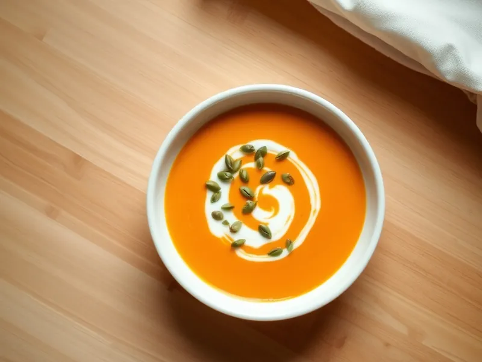

Суп-пюре из батата с кокосовым молоком
Яркий оранжевый суп-пюре из батата с имбирём, карри и кокосовым молоком
40 мин4 порц.280 ккал на порциюБ 4 · Ж 15 · У 36Интернациональная кухня
Открыть в приложении: порции, таймеры, список покупок
Продукты на 4 порц.
- Батат3 шт
- Кокосовое молоко200 мл
- Лук репчатый1 шт
- Имбирь15 г
- Чеснок2 зуб.
- Карри (приправа)1 ч. л.
- Оливковое масло1 ст. л.
- Вода700 мл
- Соль1 ч. л.
- Тыквенные семечки по желаниюпо вкусу
Как готовить
- Нарежьте лук, натрите имбирь, раздавите чеснок. Обжарьте на масле в кастрюле на среднем огне 5 минут, добавьте карри и прогрейте 30 секунд.
- Очистите батат, нарежьте кубиками и положите в кастрюлю. Залейте горячей водой и посолите.
- Варите под крышкой на среднем огне 20 минут, пока батат не станет совсем мягким.
- Влейте кокосовое молоко и измельчите суп погружным блендером до гладкости.
- Прогрейте на слабом огне 2 минуты и подавайте, посыпав тыквенными семечками.
Совет. Если суп получился слишком густым, разведите его горячей водой: батат крахмалистый и густеет сильнее тыквы.